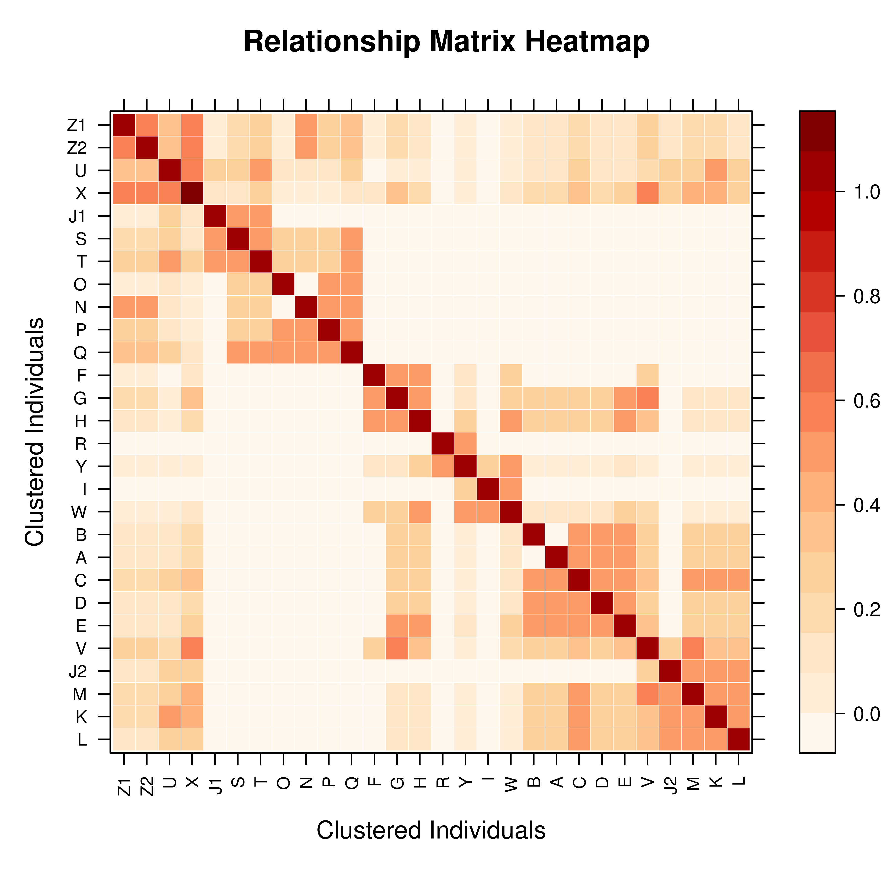
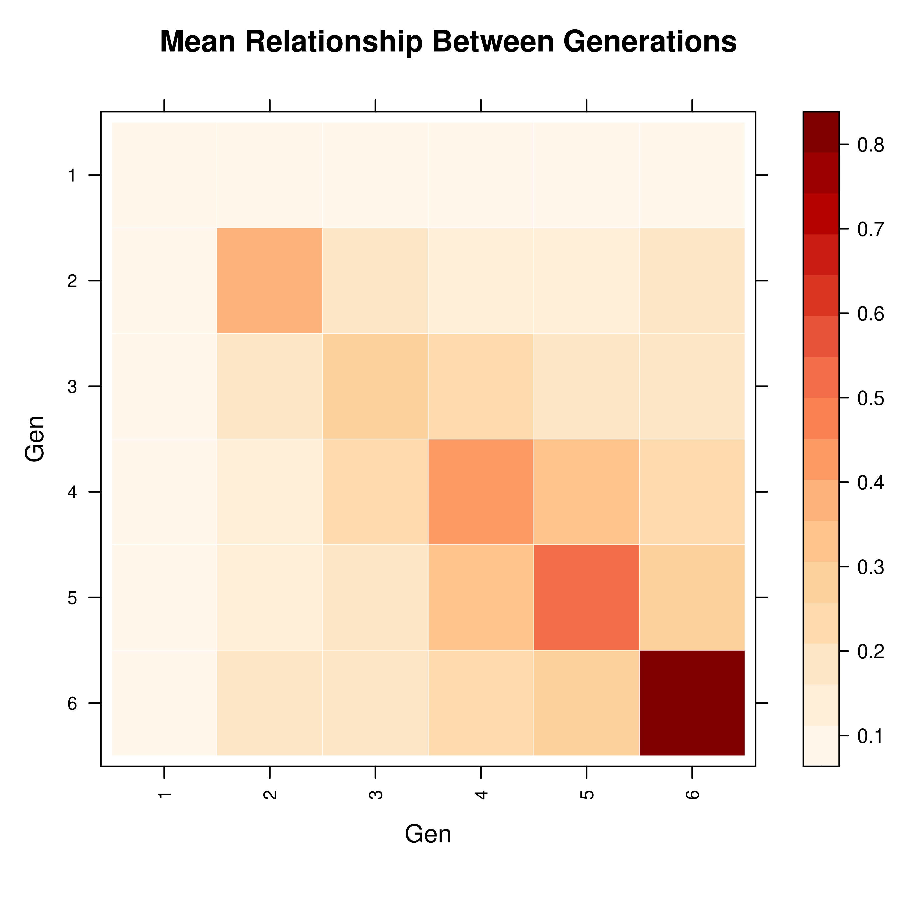
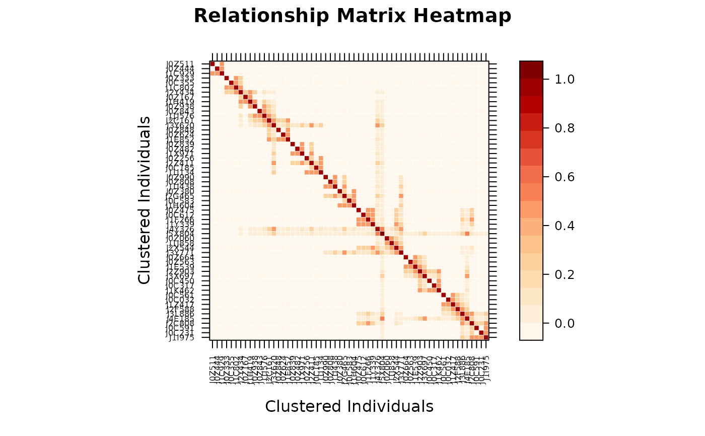
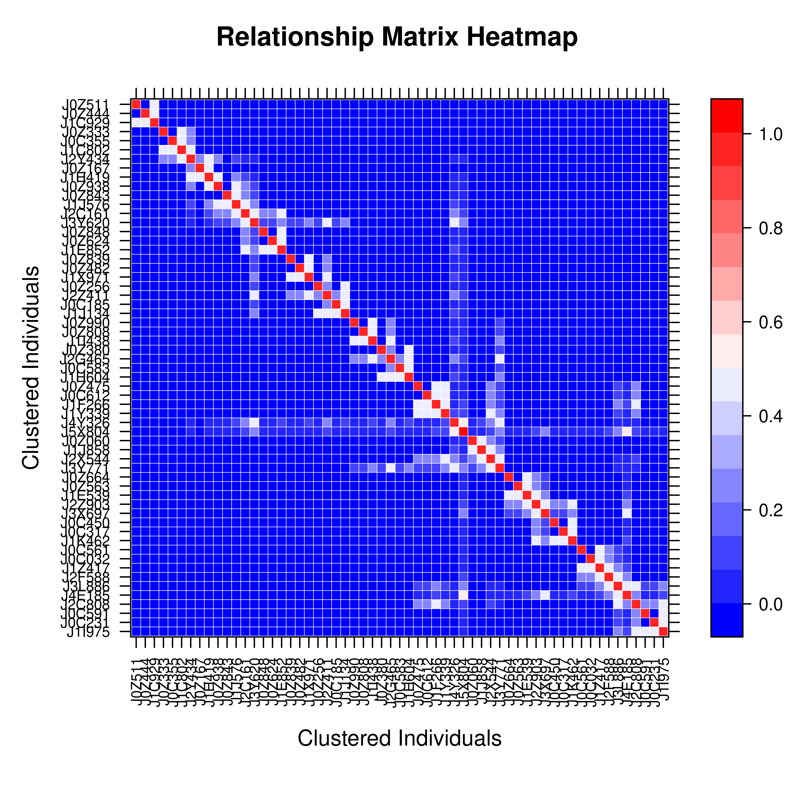
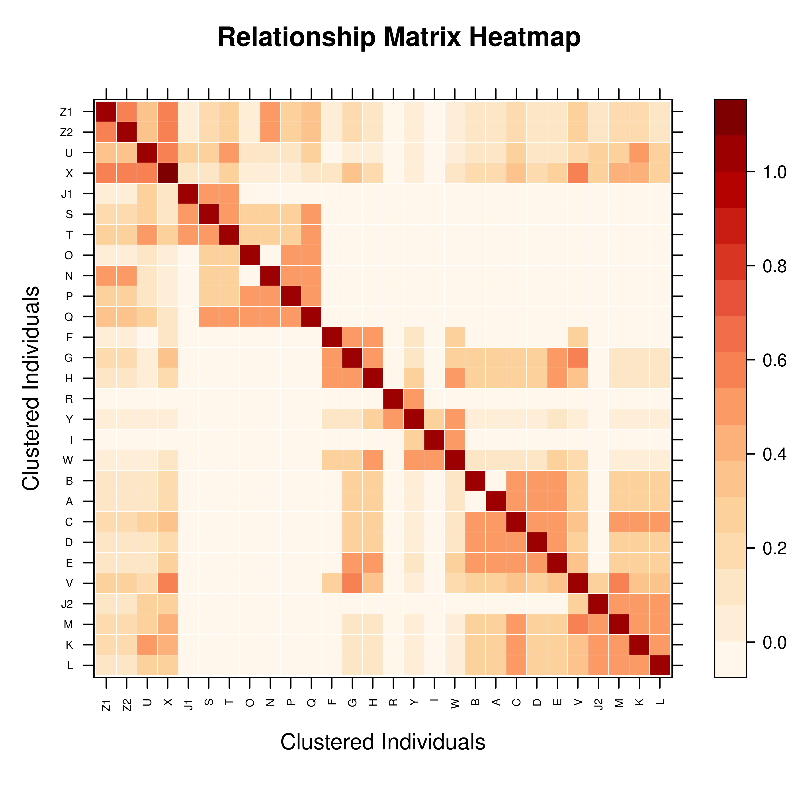
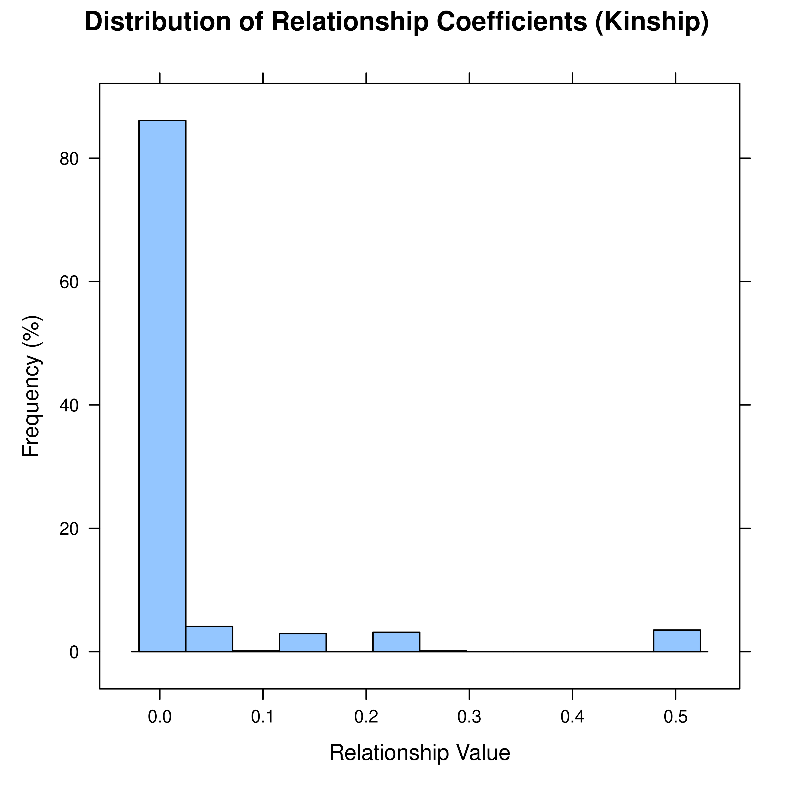
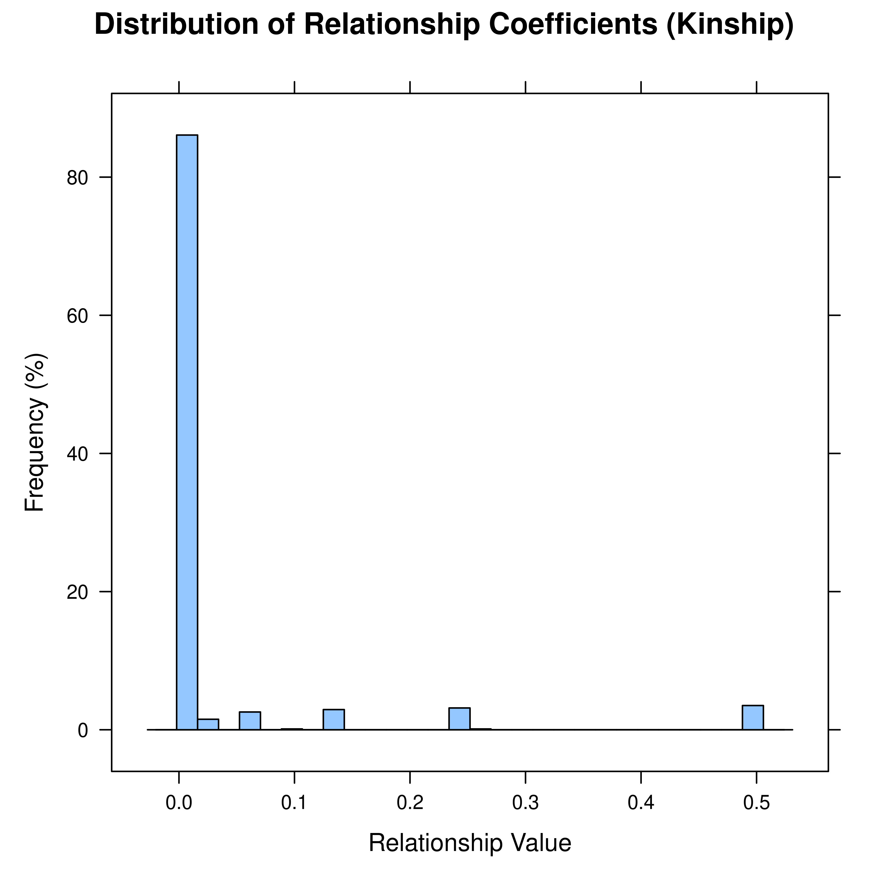
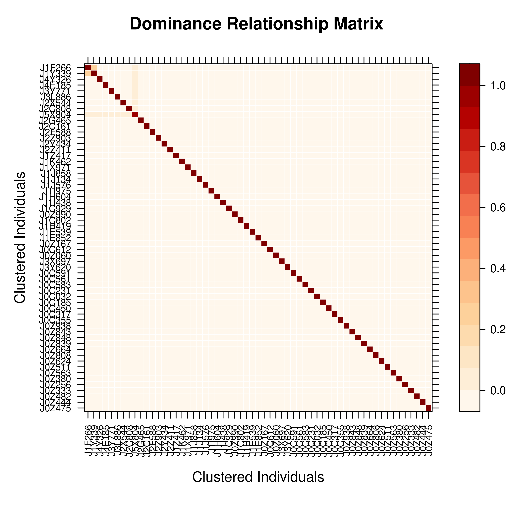

vismat provides visualization tools for relationship matrices (A, D, AA),
supporting individual-level heatmaps and relationship coefficient histograms.
This function is useful for exploring population genetic structure, identifying
inbred individuals, and analyzing kinship between families.
Usage
vismat(
mat,
ped = NULL,
type = "heatmap",
ids = NULL,
reorder = TRUE,
by = NULL,
grouping = NULL,
labelcex = NULL,
...
)Arguments
- mat
A relationship matrix. Can be one of the following types:
A
pedmatobject returned bypedmatA named list containing matrices (preferring A, D, AA)
A
tidypedobject (automatically calculates additive relationship matrix A)A standard
matrixorMatrixobject
Note: Inverse matrices (Ainv, Dinv, AAinv) are not supported for visualization because their elements do not represent meaningful relationship coefficients.
- ped
Optional. A tidied pedigree object (
tidyped), used for extracting labels or grouping information. Required when using thebyparameter. Ifmatis apedmatobject, the pedigree can be automatically extracted from its attributes.- type
Character, type of visualization. Supported options:
"heatmap": Relationship matrix heatmap (default). Uses a Nature Genetics style color palette (white-orange-red-dark red), with optional hierarchical clustering and group aggregation."histogram": Distribution histogram of relationship coefficients. Shows the frequency distribution of lower triangular elements (pairwise kinship).
- ids
Character vector specifying individual IDs to display. Used to filter and display a submatrix of specific individuals. If
NULL(default), all individuals are shown.- reorder
Logical. If
TRUE(default), rows and columns are reordered using hierarchical clustering (Ward.D2 method) to bring closely related individuals together. Only affects heatmap visualization. Automatically skipped for large matrices (N > 2000) to improve performance.Clustering principle: Based on relationship profile distance (Euclidean). Full-sibs have nearly identical relationship profiles with the population, so they cluster tightly together.
- by
Optional. Column name in
pedto group by (e.g.,"Family","Gen","Year"). When grouping is enabled:Individual-level matrix is aggregated to group-level matrix (computing mean relationship coefficients between groups)
For
"Family"grouping, founders without family assignment are excludedFor other grouping columns, NA values are assigned to
"Unknown"group
This is useful for analyzing the structure of large populations.
- grouping
[Deprecated]Usebyinstead.- labelcex
Numeric. Manual control for font size of individual labels. If
NULL(default), uses dynamic font size that adjusts automatically based on matrix dimensions (range 0.2-0.7). For matrices with more than 500 individuals, labels are automatically hidden.- ...
Additional arguments passed to the plotting function:
Value
Invisibly returns the lattice plot object. The plot is
generated on the current graphics device.
Details
Visualization Types
Heatmap:
Uses Nature Genetics style color palette (white to orange to red to dark red)
Hierarchical clustering reordering is enabled by default to group similar individuals
Matrix[1,1] is displayed at top-left corner
Grid lines shown when N <= 100
Individual labels shown when N <= 500
Histogram:
Shows distribution of lower triangular elements (excluding diagonal)
X-axis: relationship coefficient values; Y-axis: frequency percentage
Useful for checking population inbreeding levels and kinship structure
Performance Considerations
N > 2000: Hierarchical clustering reordering is automatically skipped
N > 500: Individual labels are automatically hidden
N > 100: Grid lines are automatically hidden
Grouping functionality uses optimized matrix algebra, suitable for large matrices
Interpreting Relationship Coefficients
For additive relationship matrix A:
Diagonal elements = 1 + F (where F is the inbreeding coefficient)
Off-diagonal elements = 2 x kinship coefficient
Value 0: No relationship (unrelated)
Value 0.25: Half-sibs or grandparent-grandchild
Value 0.5: Full-sibs or parent-offspring
Value 1.0: Same individual
Examples
# ============================================================
# Basic Usage
# ============================================================
# Load example data
data(simple_ped)
ped <- tidyped(simple_ped)
# Method 1: Plot directly from tidyped object (auto-computes A matrix)
vismat(ped)

# Method 2: Plot from pedmat object
A <- pedmat(ped)
vismat(A)
 # Method 3: Plot from plain matrix
A_dense <- as.matrix(A)
vismat(A_dense)
# Method 3: Plot from plain matrix
A_dense <- as.matrix(A)
vismat(A_dense)
 # ============================================================
# Heatmap Customization
# ============================================================
# Custom title and axis labels
vismat(A, main = "Additive Relationship Matrix", xlab = "Individual", ylab = "Individual")
# ============================================================
# Heatmap Customization
# ============================================================
# Custom title and axis labels
vismat(A, main = "Additive Relationship Matrix", xlab = "Individual", ylab = "Individual")
 # Disable clustering reorder (preserve original order)
vismat(A, reorder = FALSE)
# Disable clustering reorder (preserve original order)
vismat(A, reorder = FALSE)

# Custom label font size
vismat(A, labelcex = 0.5)

# Custom color palette (blue-white-red)
vismat(A, col.regions = colorRampPalette(c("blue", "white", "red"))(100))

# ============================================================
# Select Specific Individuals
# ============================================================
# Display only a subset of individuals
target_ids <- rownames(A)[1:8]
vismat(A, ids = target_ids)

# ============================================================
# Histogram Visualization
# ============================================================
# Relationship coefficient distribution histogram
vismat(A, type = "histogram")

# Custom number of bins
vismat(A, type = "histogram", nint = 30)

# ============================================================
# Group Aggregation (for large populations)
# ============================================================
# Group by generation
vismat(A, ped = ped, by = "Gen",
main = "Mean Relationship Between Generations")
#> Aggregating 59 individuals into 6 groups based on 'Gen'...
# Group by family (if pedigree has Family column)
# vismat(A, ped = ped, by = "Family")
# ============================================================
# Different Types of Relationship Matrices
# ============================================================
# Dominance relationship matrix
D <- pedmat(ped, method = "D")
vismat(D, main = "Dominance Relationship Matrix")

# Inbreeding coefficient distribution (diagonal elements - 1)
A_mat <- as.matrix(A)
f_values <- Matrix::diag(A_mat) - 1
hist(f_values, main = "Inbreeding Coefficient Distribution", xlab = "Inbreeding (F)")